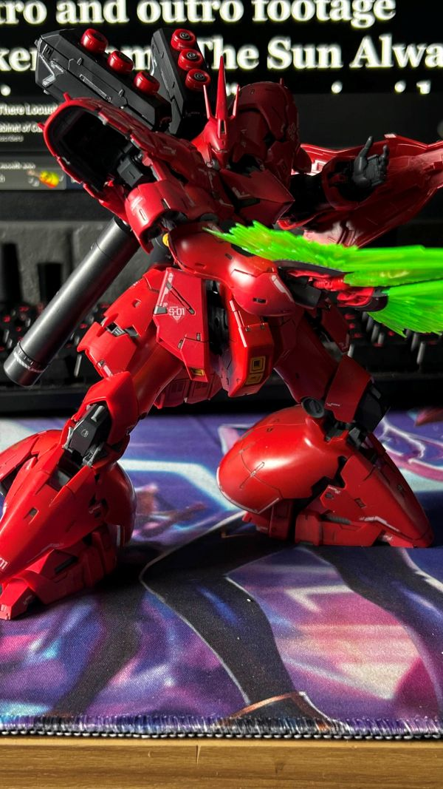
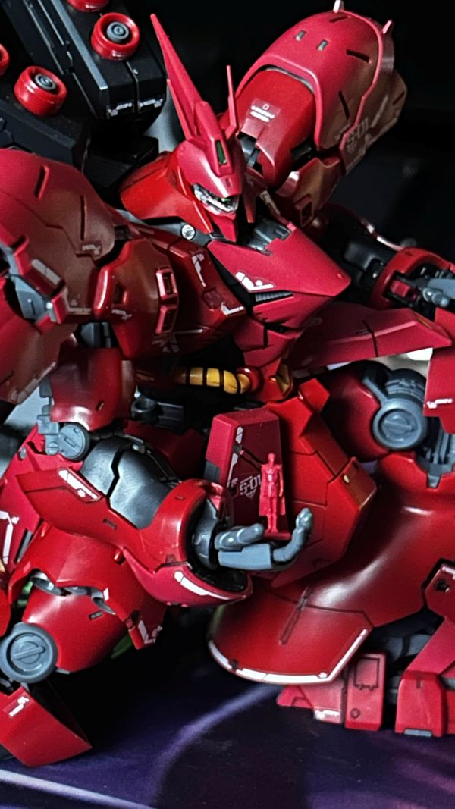
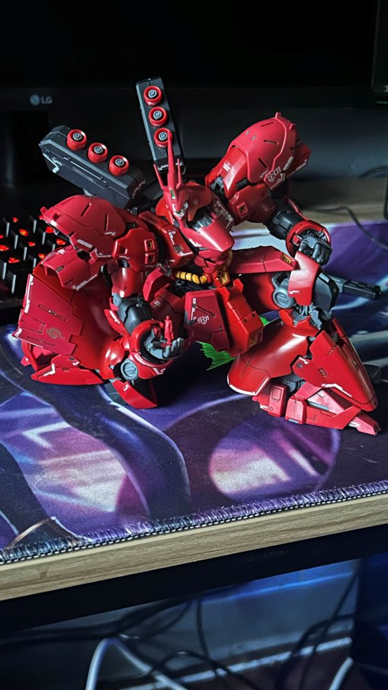
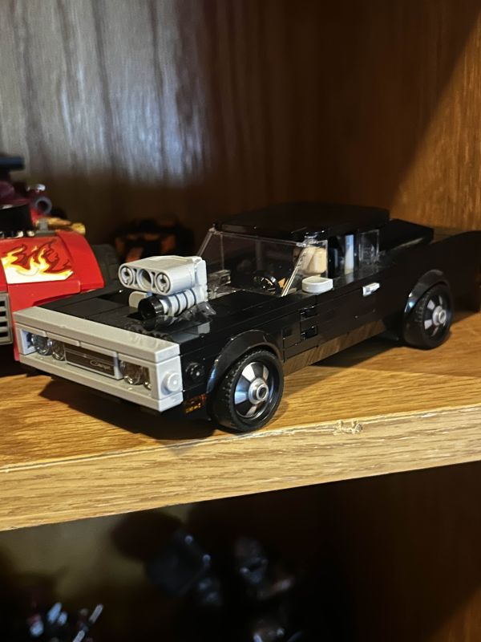

About Me
Hello! If you're reading this, you are likely either one of my classmates, TAs, or the professor of my ITMD-361 class. If so, we may never get the chance to meet, so I will introduce myself here.
My name is Nathaniel Wagner. I am a second-year Applied Cybersecurity major at IIT, as well as the bass player for Chicago metal band Suncrusher. I was born and raised in Chicago, and graduated from Jones College Prep.
Hobbies & Interests
Music
My main hobby is music. I love listening to music, and I love playing music. More on the next page, I could yap about my musical interests all day.
Model Kits
After music, I enjoy spending time building Gunpla - Plastic Gundam models. It's a very time-consuming hobby, and I like to call it my "weekend killer" from how long some of these models can take to build. Unfortunately, I have not yet watched any of the shows.
  This one is the MSN-01 Sazabi, Real Grade. My favorite build so far, both aesthetically and with how fun the building process was.
Cars
I also enjoy muscle cars. My dream car is a Mustang Boss 429, though it'd have to be a project car at this point because of how expensive they are. Aside from that, I have a lego model of Dom Toretto's 1970 Dodge Charger sitting near my Gundams.
Exercise
I don't have any images to put here, but I also enjoy lifting weights and working out. My goal for 2025 is to increase my maxes by at least 20lbs each. My current numbers are:
- S: 225lbs
- B: 165lbs
- DL: 305lbs
Other relevant information
- Greek life: I am on the executive board of Triangle Fraternity, serving as the House Manager for the 2025 Calendar year
- Pets: I have a dog named after Jimi Hendrix
- Storytime: Once, at my friend's birthday party in the woods, I fell off a bridge. I recdorded him throwing a rock off said bridge, and didn't pay attention to my surroundings when I stepped backwards. I was caught by the edge of the bridge and a tree after falling about 5 feet, and have video proof of it.